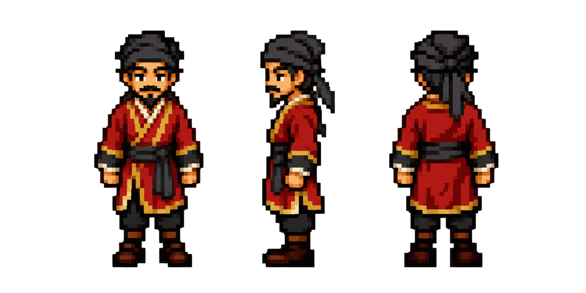

Front · Left · Back. Original generated artwork, with its colours preserved.
A more angular face, leaner proportions and long vertical gold trim.
Relaxed eyebrows, warmer eyes, softer cheeks and a more compact silhouette.

Generated with the built-in image tool. These are standing design studies for choosing a style.